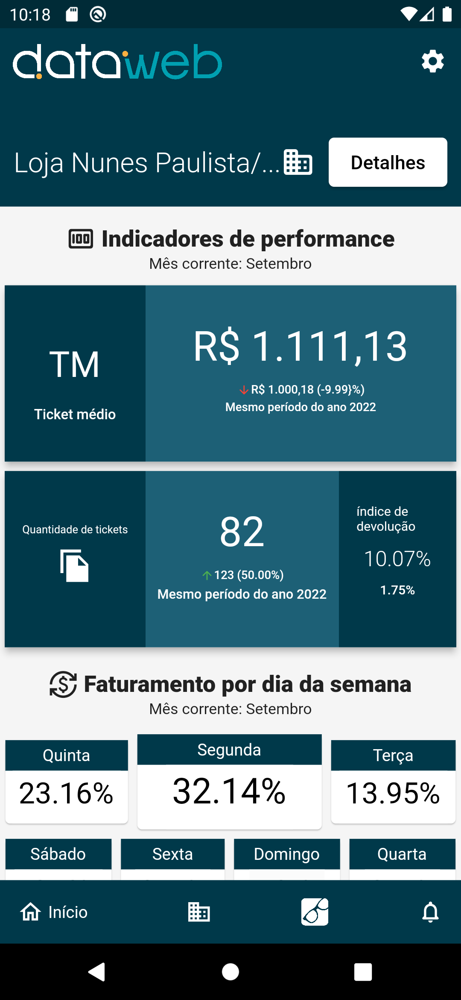
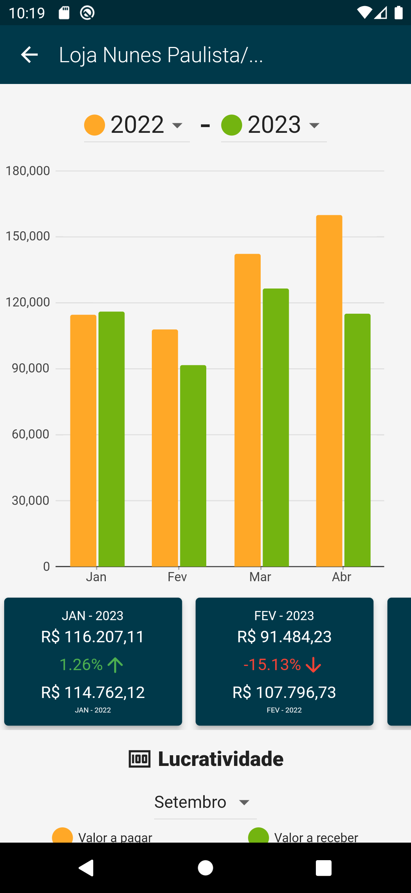
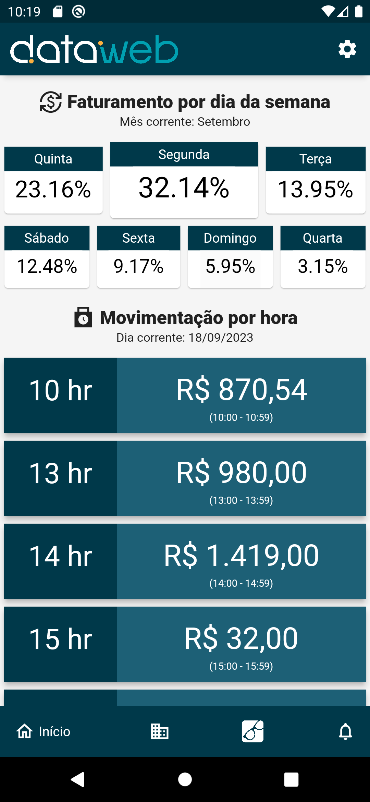
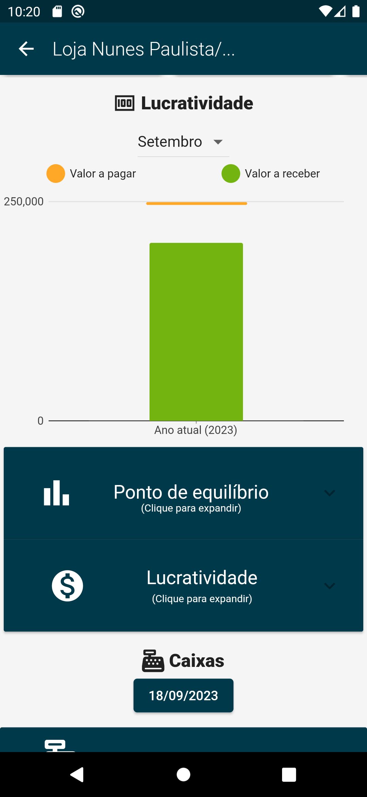
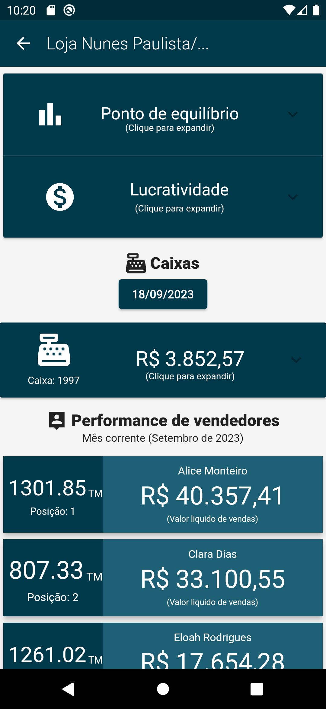
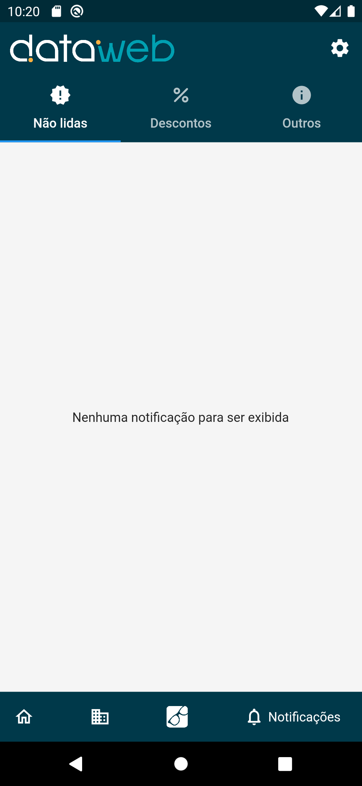
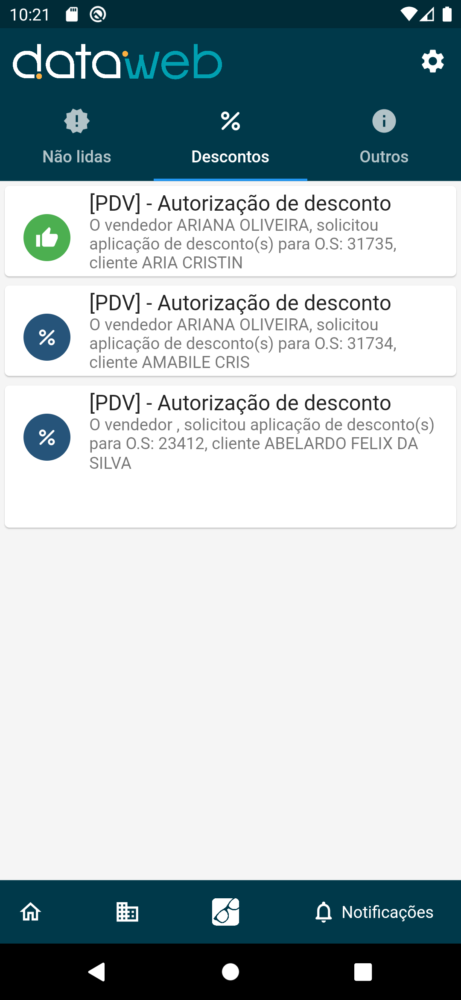

Bussiness App
Descrição
Este projeto, trata-se de um aplicativo Mobile para controle de finanças de empresas.
O objetivo desta aplicação é exibir em forma de valores, gráficos e percentuais os
resultados e métricas de uma ou mais empresas em determinados períodos de tempos.
Este projeto, foi o primeiro produto Mobile de uma empresa, isto é, fui o desenvolvedor encarregado de criar a primeira experiência da empresa em uma nova plataforma. A linguagem, framework e banco de dados também foram tecnologias inovadoras dentro da empresa. A linguagem é o Dart, o framework é o Flutter e o banco de dados é o Firebase.
Neste projeto, fui o responsável por publicar o aplicativo nas duas principais lojas de aplicativos Mobile atualmente, são elas: App Store para IOS e Play Store para Android.
O Aplicativo possui diversas integrações com sistemas WEB, estes sistemas WEB também são proprieades da empresa proprietaria do BussinessApp. o Aplicativo se comunica diretamente com dois sistemas, ambos desenvolvidos em C# (.net), são eles: o Serviço de autenticação (DW.Auth) e o Serviço de notificações (DW.Notifications). Essas integrações são realizadas via comunicação HTTP (Hypertext Transfer Protocol).
Autenticação
O sistema de Autenticação é um serviço que armazena e gerencia todas as contas de usuários dos clientes. É acessando este sistema que os usuários conseguem criar e administrar sua conta de acesso do BussinessApp. Sempre que o usuário fazer login no aplicativo mobile, é realizado uma comunicação entre o BussinessApp e este sistema. Nesta implementação, fui o responsável por criar e garantir o funcionamento da comunicação entre ambas aplicações.
Somente os clientes da empresa (empresa usuária do App), podem criar contas e acessar o aplicativo, a criação de contas é vinculada a uma integração com um sistema web, este sistema web armazena os dados das contas de usuário dos clientes, sendo assim, para um usuário autenticar no aplicativo, é necessário criar uma conta no sistema web, para entender melhor esse fluxo, veja o diagrama abaixo:

Banco de dados
O banco de dados que é utilizado no Aplicativo, chama-se Cloud Firestore que é um banco NOSQL da plataforma Firebase. A comunicação do App com o banco de dados é ReadOnly, ou seja, o App apenas realiza a leitura e processa a exibição dos dados.
Para que o App, possua dados do usuário para exibir e montar os gráficos, é necessário carregar os dados no Firesotre. A fonte destes dados são bancos de dados relacionais de sistemas ERP da empresa proprietária do BussinessApp, sistemas estes que os usuários já utilizam. Sendo assim, é necessário transferir os dados de um banco relacional para um Firestore, com um identificador, para que o app localize exatamente o banco correto após a autenticação.
Para realizar a carga destes dados, é realizado uma operação muito conhecida na área de ciência de dados, cujo a sigla é ETL (Extract, Transform, Load). Essa operação, realiza três tarefas que consistem em extrair dados de uma fonte, e em seguida transformar ou adaptar esses dados, para serem inseridos em uma nova base de dados. Essa operação é executada através de um script desenvolvido na linguagem Python, este script conecta no banco relacional, extrai e transforma os dados e em seguida envia os dados para o Firestore. Essa operação é realizada a cada 1 hora, para que os dados sejam constantemente atualizados no BussinessApp.
Para entender melhor este fluxo, veja o diagrama a seguir:

Notificações
O serviço de Notificações é responsável por enviar e armazenar o histórico de envios de notificações para os usuários, utilizando diversos canais de envios, tais como: Email, SMS, WhatsApp e Notificações no App (FCM). O BussinessApp se comunica com este serviço para receber notificações via Firebase Cloud Message (FCM). O serviço de Notificações foi desenvolvido inteiramente por mim em C#, para saber mais sobre este projeto clique aqui.
O aplicativo possui um sistema de Notificações, este sistema faz parte da plataforma Firebase e chama-se Firebase Cloud Message (FCM). Este sistema de notificações é integrado com uma Web Api, que gerencia e armazena toda notificação que é disparada. Sendo assim, qualquer sistema que queira disparar uma notificação no aplicativo Mobile, basta enviar uma requisição HTTP para esta Web Api (enviando os parametros necessários), e a Web Api por sua vez, se comunicará com o FCM e a notificação será entregue para os dispositivos corretos.
No FCM, toda vez que um dispositivo realizar uma comunicação com o FCM, será gerado um token de registro, este token serve como um ID para identificar o dispositivo que receberá notificações pelo FCM. No caso do BussinessApp, quando o usuário se LOGAR pela primeira vez, uma serie de funções de configurações do Firebase serão executadas, uma delas é a configuração do FCM de geração de TOKEN para o novo dispositivo. Sendo assim, o FCM se comunica com os serviços de cada sistema operacional que gerenciam notificações, no android é o serviço de transporte do Android (ATL) para dispositivos Android com o Google Play Services, e no caso de dispositivos Apple/IOS o FCM se comunica com o serviço de notificação push da Apple (APNs). Para entender melhor este fluxo, veja o diagrama fornecido na documentação do Firebase Cloud Message:

Funcionalidades
-
Autenticação
Sistema de login seguindo o padrão do OAuth 2.0 integrado com um sistema WEB responsável pela autenticação e emissão e envio dos tokens JWT.
-
Gráficos e valores
Gráficos de diversas formas exibindo valores e percentuais, podendo fazer comparações com diferentes periodos. Para fazer esses gráficos no Flutter é utilizado a biblioteca syncfusion_charts.
-
Notificações
Sistema de notificações integrado com um sistema WEB responsável por realizar a comunicação com o Firebase Cloud Message para envio de notifiações no Android e IOS.
-
Banco de dados
O banco de dados dessa aplicação é o Firestore da plataforma Firebase, o app não insere dados, apenas realiza leituras. O dados são migrados de outros bancos para o Firestore via uma operação ETL.
-
Integrações com WEB
O sistema de autentição e de notificações, são sistemas WEB escritos em C#, o aplicativo realiza comunicação HTTP com estes Web Services. Fui o responsável pela integração tanto no lado do Server (sistemas web em C#) quanto no lado do Client (Aplicativo Flutter).
Imagens
- 
- 
- 
- 
- 
- 
- 
-